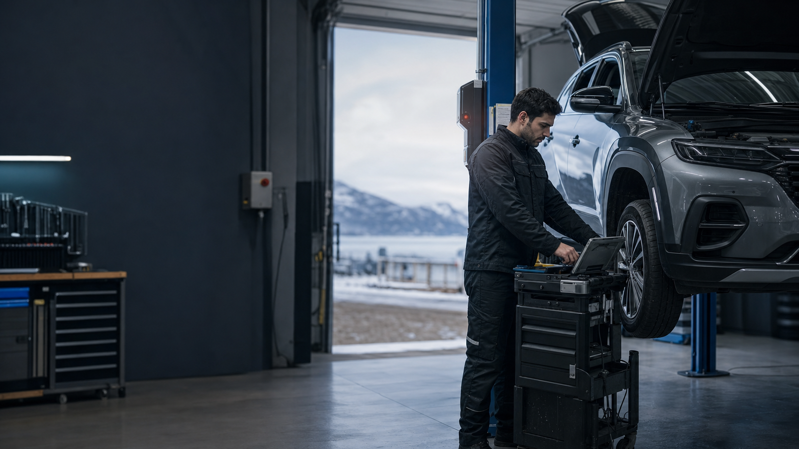

Diagnóstico y scanner
Lectura de fallas, revisión de parámetros y pruebas para encontrar el origen del problema.
- Scanner en taller
- Scanner a domicilio
- Inyección y sensores

Agendar por WhatsApp
Servicio técnico automotriz · Punta Arenas
Diagnosticamos la causa, te explicamos la solución y cuidamos tu vehículo con equipamiento profesional.
Soluciones que atacan la causa
Desde una alerta en el tablero hasta una pérdida de potencia: revisamos cada sistema con criterio técnico y una ruta de trabajo clara.
Lectura de fallas, revisión de parámetros y pruebas para encontrar el origen del problema.
Descarbonización y limpieza técnica para recuperar respuesta, estabilidad y rendimiento.
Revisión programada para anticipar fallas y evitar gastos inesperados.
Trabajos de embrague, distribución, bujías, fugas y reparación de sistemas mecánicos en vehículos de distintas marcas.
Consultar por mi vehículoOrientación rápida
Selecciona el síntoma principal. Te orientamos sobre el primer paso y preparamos un mensaje para el taller.
La pérdida de potencia puede relacionarse con admisión, EGR, DPF, inyección o sensores. El scanner y las pruebas dirigidas ayudan a evitar cambios innecesarios.
Solicitar revisión Esta orientación no reemplaza un diagnóstico presencial.Preparados para Magallanes
En Punta Arenas, batería, neumáticos, frenos, refrigeración, luces y visibilidad trabajan bajo condiciones exigentes. Una revisión a tiempo protege tu seguridad y tu bolsillo.
Agendar revisión invernal →Un proceso sin vueltas
Cuéntanos qué cambió, cuándo comenzó y cómo se comporta el vehículo.
Combinamos scanner, inspección y pruebas específicas según la falla.
Revisamos contigo el hallazgo y la alternativa de solución.
Ejecutamos el trabajo acordado y verificamos el resultado.
Ven al taller
Tu auto, en buenas manos